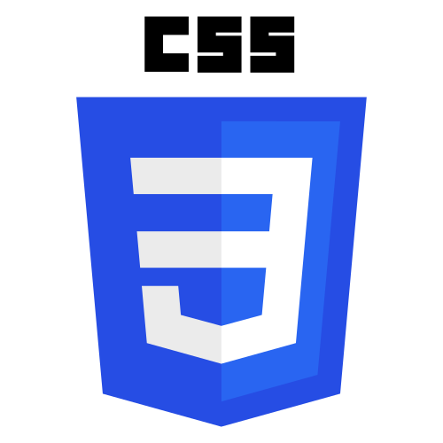
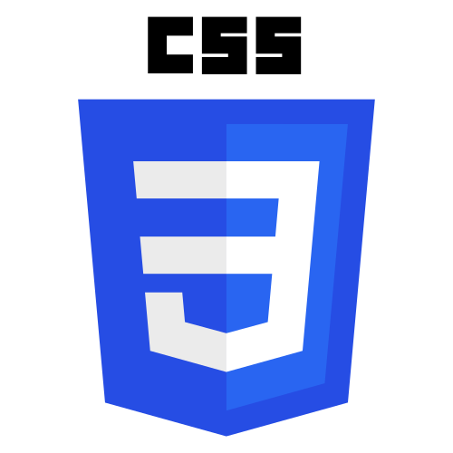
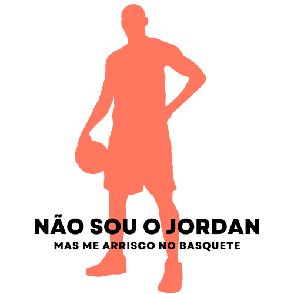
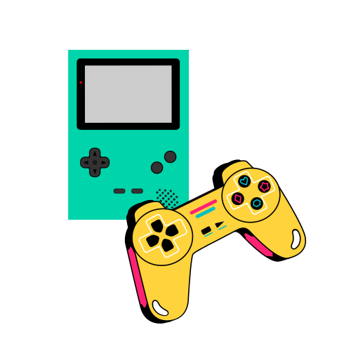
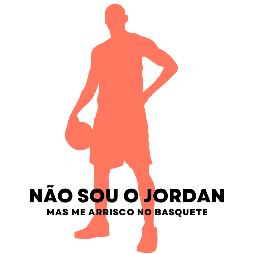
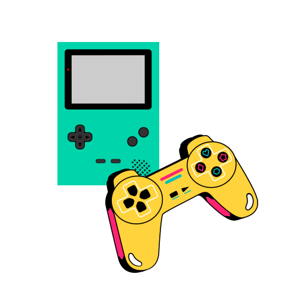

Infelizmente, devido a alguns fatores, não consegui progredir em meus estudos por um tempo, mas o desejo de aprender a Codar nunca saiu da minha mente e depois de alguns anos eu voltei a estudar. Agora estou muito empolgado com as novas habilidades que eu estou desenvolvendo.
A minha primeira linhguagem foi Java  . Foi com ela que eu peguei toda a base da Programação Orientada a Objetos - POO, conceitos como Classes, Objetos, Instanciamento, Visibilidade, Herança, Polimorfismo, Abstração entre outros. Em seguida, comecei a estudar HTML5 e CSS3  e pouco tempo depois eu me apaixonei por JavaScript
. Foi com ela que eu peguei toda a base da Programação Orientada a Objetos - POO, conceitos como Classes, Objetos, Instanciamento, Visibilidade, Herança, Polimorfismo, Abstração entre outros. Em seguida, comecei a estudar HTML5 e CSS3  e pouco tempo depois eu me apaixonei por JavaScript  . Minha curva de aprendizado começou a ficar cada vez mais curta e passei a mergulhar cada vez mais em tecnologias de desenvolvimento Front-End, inclusive estou construindo um projeto muito legal em React
. Minha curva de aprendizado começou a ficar cada vez mais curta e passei a mergulhar cada vez mais em tecnologias de desenvolvimento Front-End, inclusive estou construindo um projeto muito legal em React  .
.
Minhas Skils
Estou iniciando minha graduação em Análise e Desenvolvimento de Sistemas e estudando por meio de outras plataformas digitais. Meu foco é me tornar um Desenvolvedor Web experiente e dominar outras tecnologias como AWS, NodeJs, React Native, Bancos Orientados a Objetos e etc.
O que andei fazendo
Me formei em Química Industrial e atualmente sou Analista de Desenvolvimento de Produtos em uma industria de saniantes. Analiso o desempenho do nosso produto, faço análises estatisticas do processo bem como do produto para encontrar melhorias que venham a trazer beneficios para a empresa e para o consumidor.
Já trabalhei por 5 anos em uma empresa de equipamentos eletrônicos de segurança e controle de acessos. Tive a oportunidade de aprender a configurar, instalar e fazer manutenção em diversos equipamentos assim como configurar sistemas e lidar com o publico.
Meus hobbies
Eu gosto muito de praticar esportes como ciclismo e basquete. Nas minhas horas vagas gosto de sair de casa, soar a camisa, me conectar com a natureza, relaxar em um ambiente tranquilo com os amigos e as vezes jogar.
 



Eu estou gostando muito de aprender a desenvolver e fazer esse site pra contar um pouco sobre mim foi um desafio muito divertido. Se você leu até aqui, espero que você tenha gostado do meu trabalho nesse site e agradeço por você ter me dado um pouquinho do seu tempo para que eu podesse falar sobre de mim.
Ei, ainda não acabou...
Vem olhar o curriculo que
eu fiz só com HTML e CSS!